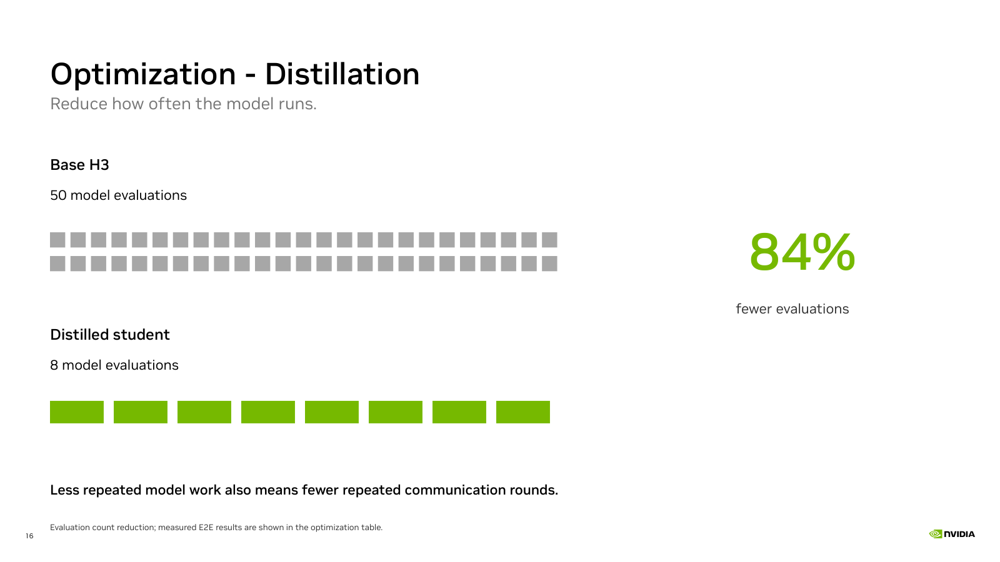
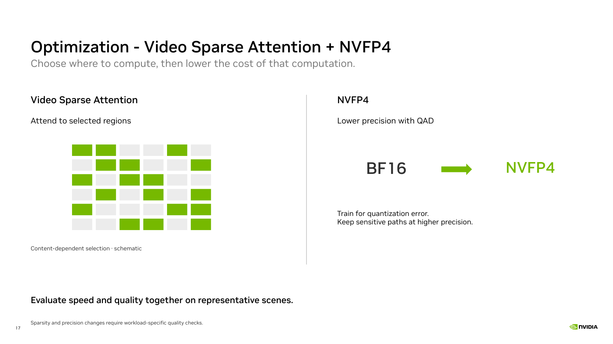
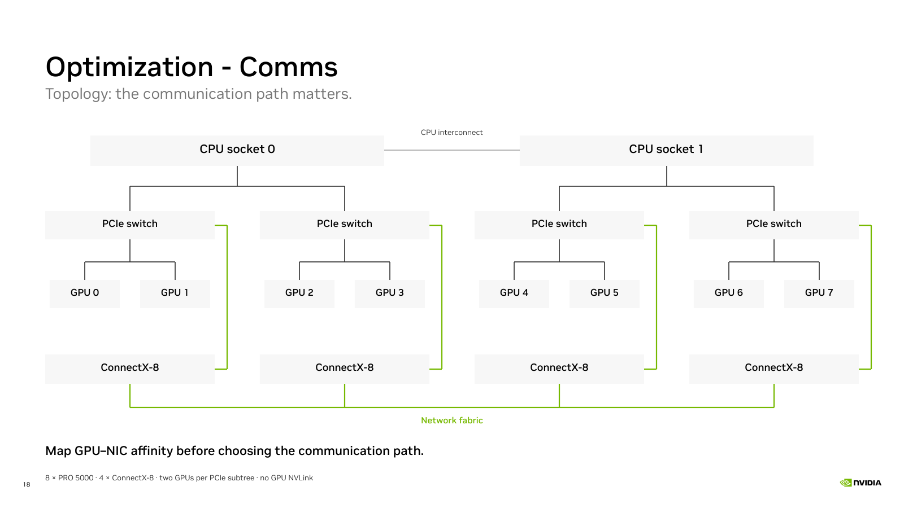
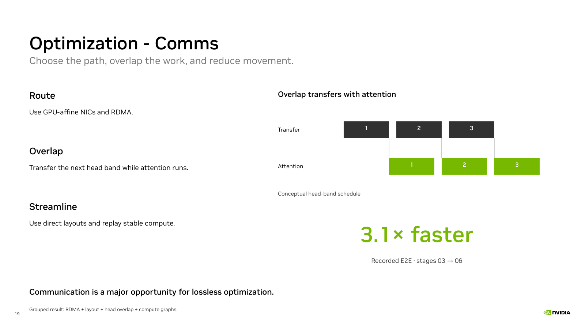

Present online · Slides and downloads
13 main slides, including the cover and closing slide. Suggested speaking time: 11.5 minutes, including 90 seconds for the recorded demo. The original material remains available as hidden detail.
| Order | Topic | Suggested time |
|---|---|---|
| 1 | Toward Real-time Generation with MiniMax H3 | 20 s |
| 2 | Real Time Is an End-to-End Budget | 40 s |
| 3 | SM120 Cards | 40 s |
| 4 | Baseline: Latency Breakdown | 60 s |
| 5 | Optimization - Distillation | 60 s |
| 6 | Optimization - Video Sparse Attention + NVFP4 | 70 s |
| 7 | Optimization - Comms | 75 s |
| 8 | Optimization - Comms | 75 s |
| 9 | Real Time Comes from the Whole Pipeline | 60 s |
| 10 | Real-Time Interaction Needs the Full Loop | 40 s |
| 11 | Live Avatar: Recorded Conversation | 90 s |
| 12 | Takeaways | 55 s |
| 13 | Closing slide | 5 s |




Timing is a suggested presentation plan. The 3.1× result is a grouped E2E comparison from the retained optimization ladder, not an isolated RDMA gain. Plan and ratio provenance · Measured results